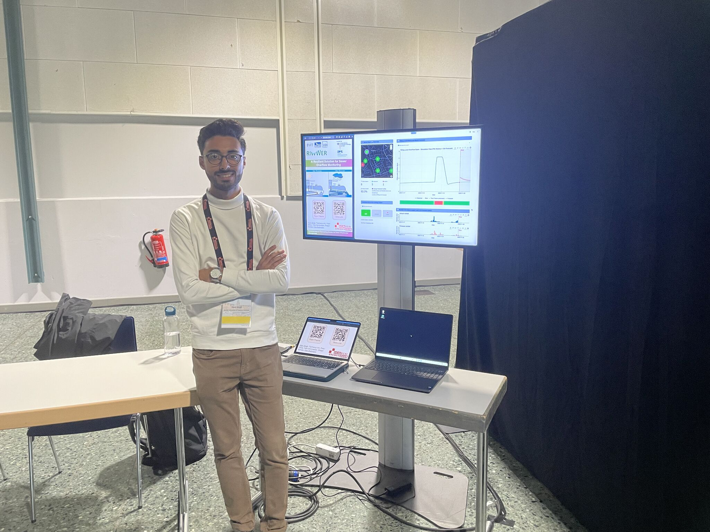

News ·
Presented two demos at IJCAI-ECAI 2026 in Bremen



Last week I attended IJCAI-ECAI 2026 in Bremen and had the chance to present two demo papers! 🎉 Seeing two projects that I have worked on come to life at such a big conference was very rewarding:
🌧️ “A Resilient Solution for Sewer Overflow Monitoring across Cloud and Edge” demonstrates how AI-based forecasts can support sewer overflow monitoring—even when the connection to the cloud is interrupted. Read it here: https://doi.org/10.24963/ijcai.2026/994
🌱 “SoilNet App: AI-Assisted Expert-level Annotations of Soil Horizons” explores how AI can assist soil experts with a highly complex annotation task. Our study suggests that this collaboration can improve both expert performance and consistency. Read it here: https://doi.org/10.24963/ijcai.2026/993
Beyond presenting the demos, what I valued most about IJCAI was meeting the research community. I especially enjoyed the conversations at the demo booths, where I met many interesting people, received thoughtful questions and new perspectives, and discussed our work with researchers from different areas of AI.
Bremen provided a nice setting for the conference, and the banquet at the Weserstadion was another highlight. All these experiences made this conference particularly memorable.
None of this would have been possible without the support of the people behind the projects:
🌧️ Sewer overflow monitoring: Tianheng Ling, Peter Ghaly, M.Sc., Felix Grimmeisen, Gregor Schiele, and Felix Biessmann.
🌱 SoilNet App: Joey Prüssing, Teodor Chiaburu, Einar Eberhardt, Sina Hesse, Stefan Broda, Frank Haußer, and Felix Biessmann.
A special thank you to my supervisor, Felix Biessmann, for supporting me throughout both projects and for joining me in presenting the demos.
I am leaving with many new impressions and am grateful that I had the opportunity to attend such a great conference.